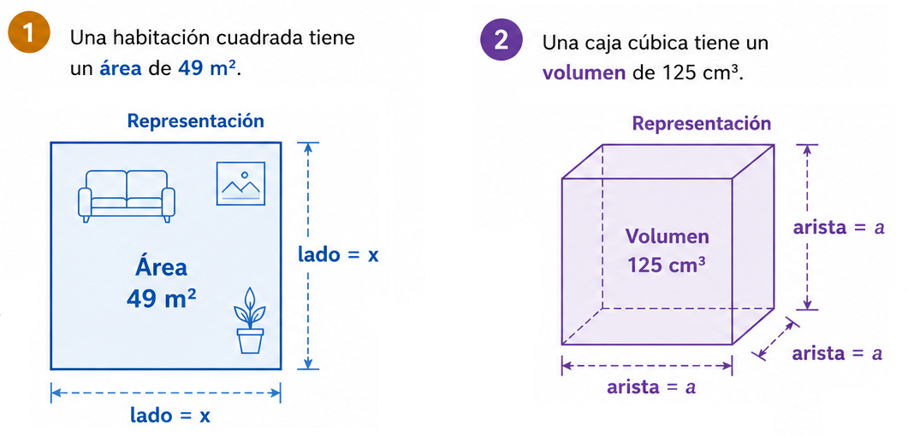
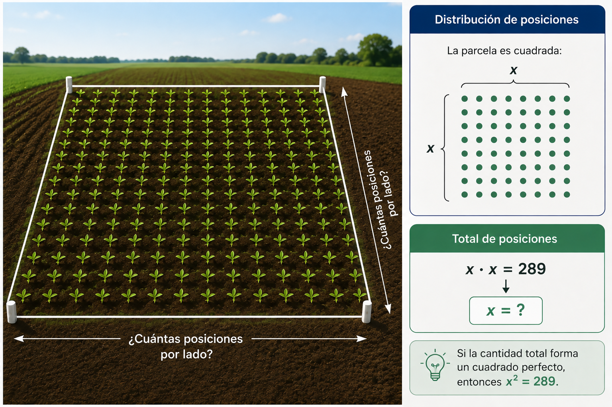

Multiplicar lo mismo, varias veces
Antes de definir nada, observemos cómo se construyen algunos cálculos.
Para no escribir estos productos tan largos, usamos una potencia: una forma breve de anotar el número que se repite (la base) y cuántas veces se repite (el exponente). Mientras mirás el video, prestá atención a cómo se nombran esos dos datos, y qué pasa cuando la base es negativa.
Formalización
Definición
La potenciación abrevia una multiplicación repetida del mismo número. Si \(a\) es un número real y \(n\) un número natural:
\(a\) es la base y \(n\) es el exponente.
| Caso | Expresión | Resultado |
|---|---|---|
| Exponente \(0\) | \(a^0\) (\(a\neq0\)) | \(=1\) siempre |
| Exponente \(1\) | \(a^1\) | \(=a\) |
| Base negativa, exponente par | \((-4)^2\) | \(16\) ✓ positivo |
| Base negativa, exponente impar | \((-2)^3\) | \(-8\) ✗ negativo |
Propiedades: tocá cada una para ver el video
Ejemplo: \(2^3\cdot2^2=2^5=32\)
Ejemplo: \(2^5\div2^2=2^3=8\)
Ejemplo: \((2^3)^2=2^6=64\)
Ejemplo: \((2\cdot3)^2=4\cdot9=36\)
Ejemplo: \((4/2)^3=64/8=8\)
Ejemplo: \(2^{-3}=\dfrac{1}{2^3}=\dfrac{1}{8}\)
Aplicación
Una red de sensores se organiza en niveles: cada sensor conecta con \(3\) sensores nuevos, y esa conexión se repite durante \(4\) niveles sucesivos. ¿Cuántos sensores hay en el último nivel, y cómo se escribe eso de forma compacta?
La operación inversa
Si potenciar es multiplicar un número por sí mismo varias veces, radicar es recuperar el número que genera un resultado conocido.
De la potencia a la raíz
Esta misma lógica aparece al medir: si conocemos el área de un cuadrado o el volumen de un cubo, podemos preguntarnos qué longitud los genera.

En ambos casos, la radicación deshace una potenciación: la raíz cuadrada recupera el lado a partir del área, y la raíz cúbica recupera la arista a partir del volumen.
Mientras mirás el video, prestá atención a por qué la raíz cuadrada principal de un número positivo se toma no negativa.
Formalización
Definición
La radicación es la operación inversa de la potenciación: busca el número \(b\) que, elevado al índice \(n\), produce el radicando \(a\).
\(a\) es el radicando, \(n\) es el índice, \(b\) es la raíz. Cuando el índice no se escribe, es \(2\).
Índice par
Si el radicando es positivo, existen dos números reales que elevados al índice dan el mismo resultado. Por convención se toma la raíz principal (no negativa): \(\sqrt9=3\), no \(-3\).
Índice impar
Todo número real tiene una única raíz real, sin necesidad de convención: \(\sqrt[3]{-8}=-2\), porque \((-2)^3=-8\).
| Propiedad | Expresión | Ejemplo |
|---|---|---|
| Raíz de un producto | \(\sqrt[n]{a\cdot b}=\sqrt[n]{a}\cdot\sqrt[n]{b}\) | \(\sqrt{4\cdot9}=\sqrt4\cdot\sqrt9=6\) |
| Raíz de un cociente | \(\sqrt[n]{a/b}=\sqrt[n]{a}/\sqrt[n]{b}\) | \(\sqrt{16/4}=\sqrt{16}/\sqrt4=2\) |
| Raíz de una raíz | \(\sqrt[m]{\sqrt[n]{a}}=\sqrt[m\cdot n]{a}\) | \(\sqrt{\sqrt{81}}=\sqrt[4]{81}=3\) |
| Potencia de una raíz | \((\sqrt[n]{a})^m=\sqrt[n]{a^m}\) | \((\sqrt4)^3=\sqrt{4^3}=8\) |
| Raíz como potencia fraccionaria | \(\sqrt[n]{a^m}=a^{m/n}\) | \(\sqrt[3]{2^6}=2^{6/3}=4\) |
Aplicación
En un ensayo agronómico, se distribuyen \(289\) posiciones de siembra en una parcela cuadrada, con la misma cantidad de filas y columnas. ¿Cuántas posiciones hay por lado?

El orden en el que se resuelve
Antes de formalizar la jerarquía de operaciones, observemos qué ocurre cuando cambia el orden de resolución.
El orden, paso a paso
| Orden | Regla |
|---|---|
| 1° | Agrupadores: paréntesis \(( )\) → corchetes \([\,]\) → llaves \(\{\,\}\) |
| ✱ | La barra de fracción actúa como agrupador implícito: agrupa numerador y denominador. |
| 2° | Potencias y raíces |
| 3° | Multiplicación y división (de izquierda a derecha; tienen la misma jerarquía) |
| 4° | Suma y resta (de izquierda a derecha; tienen la misma jerarquía) |
Mientras mirás el video, fijate cómo se aplica este orden en una expresión con varias operaciones combinadas.
Idea clave
- Multiplicación y división están al mismo nivel: se resuelven en el orden en que aparecen.
- Suma y resta están al mismo nivel: también de izquierda a derecha.
- Un paréntesis puede contener cualquier operación, y siempre se resuelve primero.
Resolución guiada
- 1Paréntesis: \(3+\frac{1}{2}=\frac{7}{2}\) → queda \(\frac{7}{2}\cdot4-2^2\).
- 2Potencia: \(2^2=4\) → queda \(\frac{7}{2}\cdot4-4\).
- 3Multiplicación: \(\frac{7}{2}\cdot4=14\) → queda \(14-4\).
- 4Resta: \(14-4=10\).
Aplicación
Para calcular \(\sqrt9+2\cdot(5-3)^2\), ¿por dónde conviene empezar?
Tres ideas, una misma lógica
La potenciación y la radicación son operaciones inversas, y ambas aparecen dentro de expresiones más complejas, donde la jerarquía organiza el orden de resolución.
Potenciación
Abrevia una multiplicación repetida. La base y el exponente determinan el resultado y su signo.
Radicación
Es la operación inversa: busca qué número, elevado al índice, da el radicando.
Jerarquía
Ordena cómo se resuelve una expresión cuando aparecen varias operaciones juntas, incluidas potencias y raíces.
De la potencia a la raíz, y de vuelta
Síntesis
Para resolver una expresión con potencias, raíces y otras operaciones:
- 1Resolvé lo que está dentro de los agrupadores.
- 2Calculá potencias y raíces.
- 3Resolvé multiplicaciones y divisiones, de izquierda a derecha.
- 4Resolvé sumas y restas, de izquierda a derecha.
Conocer el orden es tan importante como saber calcular cada operación por separado.